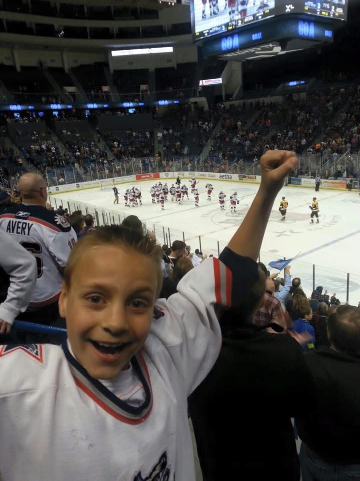
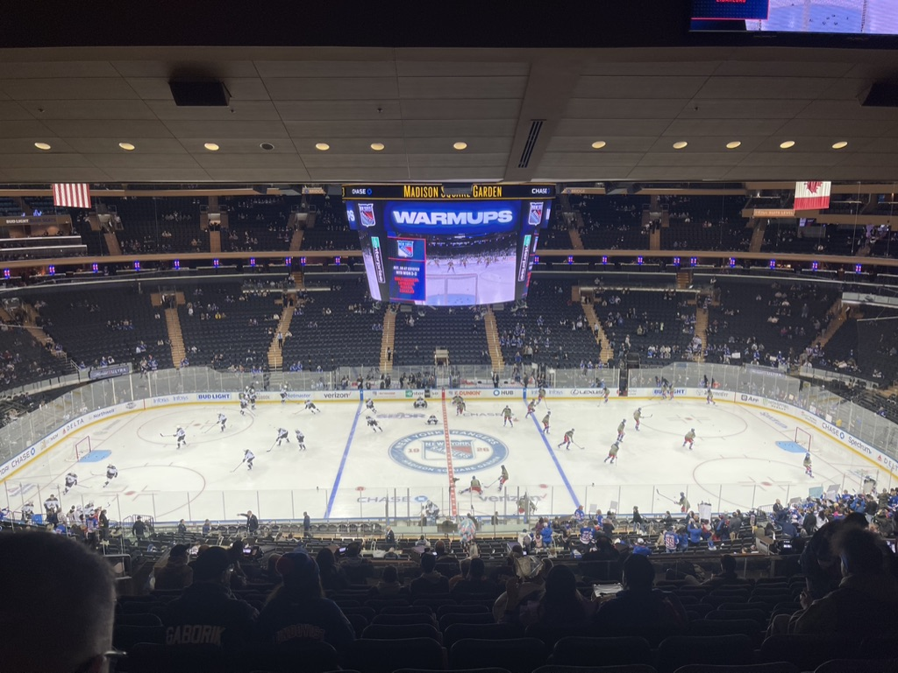
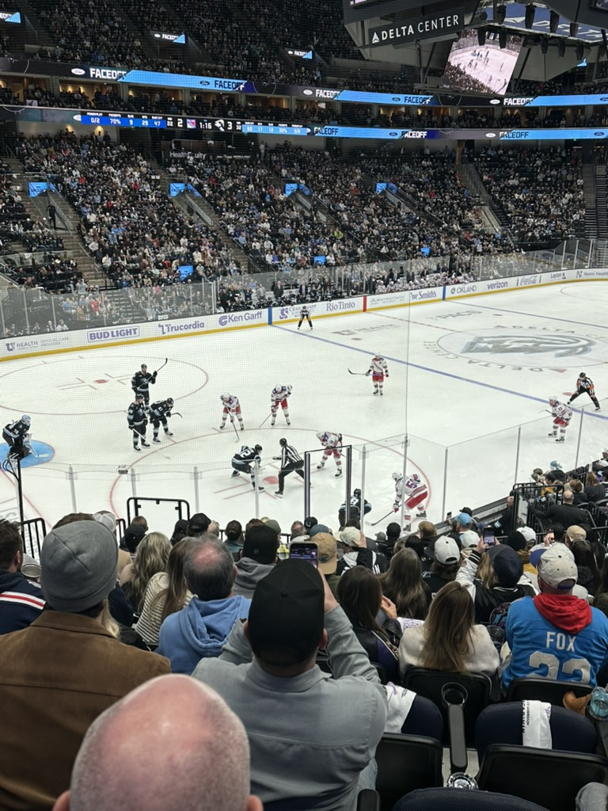
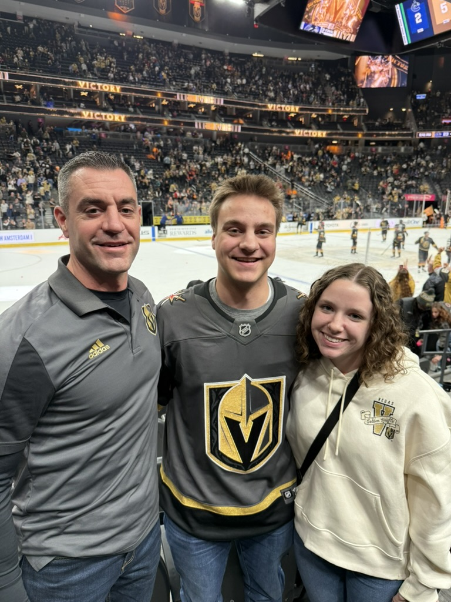

NHL Scoring Leaders and Player Statistics

My name is Carsen Prenoveau. One of my biggest passions is hockey. Whether I'm watching games, attending live events, or following teams throughout the season, hockey has always been something I enjoy and stay connected to. I want to highlight that passion and some of the experiences I've had as a fan.
One of the best parts of being a hockey fan for me has been attending games in person. Each arena has its own atmosphere, and every trip has turned into a memorable experience. These photos represent some of the moments that have made hockey such an important part of my life.

This photo was taken when I was younger at a Hartford Wolf Pack game. My dad would take me to games occasionally, and those early experiences are what first got me interested in hockey. It's one of the reasons the sport has stayed important to me over the years.

This was my first time attending a New York Rangers game in person at Madison Square Garden. I took this photo during warm-ups shortly before leaving on my mission. Being able to see the team live in their home arena was something I had always wanted to do, and it lived up to the expectation.

This photo shows a face-off during a Rangers game at the Delta Center. Seeing the team play in Utah made the experience even more unique, and it was exciting to watch the game from a new arena environment.

This trip to Las Vegas was especially meaningful because my fiancée and I traveled there to meet my dad while he was in town for work. Attending the game together made it a memorable family experience and added another great memory connected to hockey.